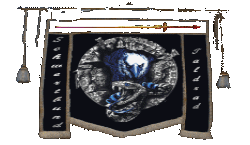
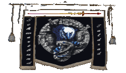
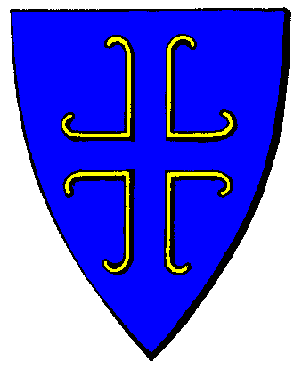

|

|
Das schwarze Brett
|
|
| Übersicht,
Anschläge und Stammtisch (RPG) |
|
Offene Beschwerde an den Bendur-Konvent
|
| Ardán Schwarzauge (RIP) |
Werte Verkünderin des Glaubens an Bendur,
leider habe ich Grund zur Beschwerde. Ich will mich auch brav kurz fassen, um nicht unnötig Eure sicherlich kostbare Zeit zu rauben, da Ihr Euch doch bestimmt mit weit wichtigeren Dingen in diesen unruhigen Zeiten befassen müßt.
Doch leider muß ich meinem Unmut über einen Sachverhalt Luft machen, den ich nicht in mich hineinfressen kann, fürchte ich doch sonst um mein Seelenheil.
Meine Beschwerde richtet sich gegen den seefahrerisch wenig talentierten Hohepriester Eran, der meine vertrauensvoll an ihn gerichtete Anfrage über die dem ehrenwerten Mirdan o Glaneth vorgeworfenen Vergehen, die ihn zum Piraten machen, wie folgt wenig freundlich beantwortete (ich zitiere): "Die einzige Antwort die ich dir anmaßendem Piraten zuteil werden lasse ist die des Schwertes, Gefallener!"
Wenn ich es mir schon gefallen lassen muß, von diesem schiffeversenkenden Hohepriester als Pirat bezeichnet zu werden, ohne auf der vom Bendurkonvent erst kürzlich veröffentlichten Piratenliste zu stehen, dann fordere ich hiermit, daß sich dieser nautisch-legasthenische Bendurjünger öffentlich bei mir für diese Beleidigung entschuldigt. Andersnfalls sollte der Konvent mich auf die Piratenliste setzen, wobei ich sehr gespannt mit, welche Vergehen mir zur Last gelegt werden.
Ich hoffe auf eine baldige, informative Antwort!
Deichgraf Ardán Fálmanôr,
Anführer der glorreichen Nation "Korsaren der Roten Hand",
Der Schwarze Korsar,
Verlobter der reizenden Dagorineth
Zur 6. Stunde am 38.Erntemond im Jahre 438 |
28.07.09 22:35
 |
|
| TATARS (RIP) |
meine erfahrung ist das der deichgraf nur auf dem deiche rumkrabelt. ich bin mir nicht gewiss aber glaube doch das er noch nie auf hoher see war!
Sir TATARS,
Priester im Dienste des einzig wahren Glaubens an Urvan,
Reichsvikar der Tajus
Zur 11. Stunde am 38.Erntemond im Jahre 438 |
28.07.09 23:52
|
|
Morgan Muirgius
 |
*schickt eine Taube*
Morgan Muirgius,
Hohepriester im Dienste des einzig wahren Glaubens an Bendur
Zur 23. Stunde am 38.Erntemond im Jahre 438 |
29.07.09 2:42
|
|
Imperius Taldrad
   |
Hmm.... Korsaren sind doch Piraten.... gab es da mit mal eine Veröffentlichung des Bendur Konvents in dem Stand: Alle die sich als Piraten betiteln werden auch verfolgt.
Vielleicht trügt mich auch meine Erinnerung.
In diesem Zusammenhang würde wohl ein Konventsanhänger erstmal negativ auf einen Korsaren reagieren.
Des Weiteren finde ich es seltsam, dass man eine Brieftaube an den Pranger stellt. (Das Wortspiel ist gewollt).
Sir Imperius Taldrad,
Anführer der glorreichen Nation "Schwertbund Taldrad",
Oberhaupt der Familie Taldrad
Zur 4. Stunde am 40.Erntemond im Jahre 438 |
29.07.09 9:25
|
|
| Ardán Schwarzauge (RIP) |
Ihr habt recht, werter Sire Taldrad. Der Bendurs-Konvent hat tatsächlich vor langer Zeit einmal festgelegt, daß ein Korsar einem Piraten gleichzusetzen ist. Lange Zeit habe ich aufgrund Eures Hinweises die Archive durchwühlt, um eine Antwort auf diese Frage zu finden.
Doch liegt der Ursprung des Wortes Korsar in einer alten Sprache und bedeutet dort sinngemäß "Beutezug" oder schlicht und einfach "Kurs".
Außerdem habe ich in der Bekanntmachung über die Ziele der Korsaren der Roten Hand eindeutig gesagt, daß wir nur gegen unsere Feinde Krieg führen werden. Wir gehen also, um auf die Bedeutung des Wortes zurückzukommen, nur auf Beutezug gegen unsere Feinde und nicht gegen alle freien Völker der Scherbe, wie es uns beliebt.
Nun bleibt abzuwarten, was der Bendur-Konvent daraus macht. Stützt er sich auf eine sehr alte Verlautbarung, in der zwei Begriffe (der des Piraten und der des Korsaren) fälschlicherweise vermischt wurden, oder sieht er seinen Fehler ein und hält sich an die Deifinition dessen, was nach eigener Verlautbarung einen Piraten ausmacht? Es bleibt abzuwarten.
Dem Hohepriester Muirgius danke ich für seine Taube. Ich werde sie alsbald beantworten.
Sire TATARS sei für seine verteidigenden Worte gedankt. Doch auch wenn ich der Graf der Deiche bin, so bin ich auch Seefahrer, was er aber nicht wissen konnte, da sich unsere Wege kürzlich an Land auf dem Kontinent Loh kreuzten.
So bleibt nun also noch die Entschuldigung des Hoherpriesters Eran, auf die ich warte.
Deichgraf Ardán Fálmanôr,
Anführer der glorreichen Nation "Korsaren der Roten Hand",
Der Schwarze Korsar,
Verlobter der reizenden Dagorineth
Zur 16. Stunde am 40.Erntemond im Jahre 438 |
29.07.09 12:19
|
|
Fabius Alagos
  |
Ob nun ein Korsar ein Pirat ist oder ein Raubüberfall ein Wachdienst. Letztendlich bleiben Worte nur Worte und es sind die Taten an denen wir bemessen werden.
Sir Fabius Alagos,
Kardinal im Dienste des einzig wahren Glaubens an Pheron,
Anführer der glorreichen Nation "Bruderschaft der Barfüssler"
Zur 17. Stunde am 40.Erntemond im Jahre 438 |
29.07.09 12:32
|
|
| Ardán Schwarzauge (RIP) |
Das sind weise Worte, werter Sire, die ich Euch so gar nicht zugetraut hätte. Ihr überrasch mich. Ich würde das gerne bei einem Fäßchen Rum vertiefen, wenn Ihr mögt.
Deichgraf Ardán Fálmanôr,
Anführer der glorreichen Nation "Korsaren der Roten Hand",
Der Schwarze Korsar,
Verlobter der reizenden Dagorineth
Zur 18. Stunde am 40.Erntemond im Jahre 438 |
29.07.09 12:34
|
|
Klaus Störtebeker
  |
Also wenn es danach ginge, hätte man doch längst schon "Die Bukaniere" als Piratennation verurteilt, führen sie doch piratetypische Insignien und verherrlichen in ihrem Nationslied die Piraterie, doch ließ sich der Konvent Bendurs damals, als es in der Tat mal zur Sprache kam, überzeugen, daß sie tatsächlich ihren Feinden ordnungsgemäß den Krieg erklären wollen, bevor sie gegen diese auf Beutezug ziehen, und ließen sie dann gewähren.
Und wenn man die Verkündung betrachtet, steht da ja nicht, ein Korsar wäre mit einem Pirat gleichzusetzen - wobei man schon eingestehen muß, daß rein von der Bezeichnung her die Grenze nun wirklich sehr unscharf ist - sondern daß ein Korsar - und sei es in Eurem Sinne lediglich ein Beutezügler ohne Bewertung der Legitimität - erst dann als Feind Bendurs angesehen wird, wenn er das seeräuberische Tun eines Piraten verfolgt. Und was Bendur als Piraterie betrachtet, wird ja in den Zeilen zuvor beschrieben.
Aber von all der Wortklauberei mal abgesehen ist es gleichgültig, ob man sich als Korsar, Bukanier, Freibeuter oder Kaperfahrer bezeichnet - solange man seinen Opfern, respektive Feinden, zuvor ordnungsgemäß, geschichtswichtelig bestätigt & nachvollziehbar den Krieg erklärt, betreibt man keine Piraterie - unterläßt man es, oder heftet halbherzig nachträglich eine Kriegserklärung an die geschundenen Opfer, so macht man sich der Piraterie schuldig, sofern es in Bendurs Domäne, also auf seinen Meeren geschieht. Eigentlich doch recht einfach, oder?
Wie es nun aber ist, wenn man den Willen zur Piraterie lediglich ankündigt? Nun ja, in meinen Augen wäre so einer zunächst nur ein Maulheld - wobei angesichts von Niedertracht & Heimtücke man wohl Maulantiheld sagen müßte - bis er´s dann auch vollbringt. Insoweit muß ich Sir Alagos Recht geben, es sind Taten, die zählen.
Damals, zu meinen Zeiten in den heiligen Hallen Bendurs kam es, soweit ich mich erinnere, nie zur Sprache, aber wenn Bendur verlauten läßt, auch die Ankündigung einer Sünde wider den Geboten des Herrn der Meere sei bereits Ketzerei, dann muß es wohl so sein. Ich nehme aber an, daß zwischen ketzerischen Worten und piratenhaftem Tun immer noch ein Unterschied besteht.
Ich vertraue da jedenfalls weiter dem Herrn Bendur und dem durch seine Kirche verkündeten Wort als Ganzes, selbst wenn einzelne Geweihte mal nach durchzechter Nacht anderes von sich geben mögen.
Baron Klaus Störtebeker,
Vorsteher von Caer Bannog,
Kapitän des Roten Teufels & Mitglied im Hohen Rat
Zur 6. Stunde am 41.Erntemond im Jahre 438 |
29.07.09 15:27
|
|
| Eran von Aibheisgârd (RIP) |
Mich öffentlich dafür entschuldigen dich Pirat genannt zu haben?
Das einzige Entgegenkommen was du zu erwarten hast ist die Annahme einer Duellforderung, Pirat.
Da du zurecht um dein Seelenheil fürchtest würde ich dir zugestehen das Duell lediglich bis auf´s erste Blut auszutragen. Immerhin will ich mir nicht nachsagen lassen eine irrgeleitete Seele vor der Götter Gericht geschickt zu haben ohne daß ihr Zeit eingeräumt wurde sich wieder auf den rechten Kurs zu begeben.
Sir Eran,
Vorsteher von Schiffbruch,
Hohepriester im Dienste des einzig wahren Glaubens an Bendur
Zur 19. Stunde am 41.Erntemond im Jahre 438 |
29.07.09 18:27
|
|
| Chevonne Siobhan (RIP) |
Lasst doch einen alten, verbitterten Seemann, der die besten Jahre bereits hinter sich hat, zetern. Solange er keine jungen Novizen mit Schwarzpulverfässchen und brennender Lunte dazu aufhetzt, sich in Menschenansammlungen in die Luft zu jagen, wird ja kaum jemand ernsthaft zu Schaden kommen.
Lady Siocán Siobhán,
Süsseste Versuchung seit es Kakao gibt
Zur 12. Stunde am 42.Erntemond im Jahre 438 |
29.07.09 22:34
|
|
| Eilis v. glänzenen Wolfstern (RIP) |
Hoffen wir, dass es nicht dazu kommt, dass der Hohepriester dies tut, werte Lady Siobhán.
Lady Eilis Fraech,
Vorsteherin von Wolfsherz,
Priesterin im Dienste des einzig wahren Glaubens an Wendaria,
Anführerin der glorreichen Nation "Time bølger",
Verlobte des ehrenwerten wollium,
Navajo-Halbblut
Zur 13. Stunde am 42.Erntemond im Jahre 438 |
29.07.09 22:45
|
|
| Ardán Schwarzauge (RIP) |
Da Du alter, verbitterter Schiffeversenker offenbar zu stur bist, Deinen Fehler einzusehen und nach wie vor nicht davon abweichst, will ich gerne das Angebot annehmen und fordere Dich hiermit zum Duell. Ich weiß zwar jetzt schon, wie es ausgehen wird und ich tue es auch nicht gern, doch wenn Du es unbedingt so haben willst...
Deichgraf Ardán Fálmanôr,
Anführer der glorreichen Nation "Korsaren der Roten Hand",
Der Schwarze Korsar,
Verlobter der reizenden Dagorineth
Zur 15. Stunde am 57.Erntemond im Jahre 438 |
02.08.09 11:11
|
|
Alessa Imret Eilistraee
  |
Ich für meinen Teil erhielt bis heute keine Stellungnahme zur Nennung meines Namens auf der sagenumwogenen Piratenliste.
Vielmehr handelt es sich hierbei wohl lediglich um zu Papier gebrachte Willkür, die die dauerhafte bendur`sche Geißelung rechtfertigen soll.
Lady Alessa Imret Eilistraee,
Herrin verdammter Seelen,
Geliebte des martialischen Takehiko
Zur 3. Stunde am 64.Erntemond im Jahre 438 |
03.08.09 23:19
|
|
| Achille de Beaufort (RIP) |
Die Wege des Herrn sind unergründlich und offenbar von solch komplizierter Beschaffenheit, daß die Mitglieder des Konventes sie nicht in Worte zu fassen vermögen, wie es scheinen will.
Ich will nur hoffen, daß ich mir mit solch blasphemischen Äußerungen keinen Ehrenplatz auf eben dieser Liste sichern werde, auch wenn ich mich vom Wasser weitgehend fernhalte.
Baron Achille de Beaufort,
Vorsteher von Galopiandros
Zur 20. Stunde am 64.Erntemond im Jahre 438 |
04.08.09 3:20
|
|
| Eilis v. glänzenen Wolfstern (RIP) |
Werter Achille, keine Angst. Ihr wäret nicht der einzige Neuzugang auf der Liste.
Stellt Euch nur vor, ich habe den Hohepriester Eran sturen Esel genannt und ich meine sogar, dass er eine Gefahr für die Lichtsiebengläubigen ist. Dann bin ich noch so dreist und kaufe mir im Handelshaus eine Piratenflagge.
Lady Eilis Fraech,
Vorsteherin von Wolfsherz,
Priesterin im Dienste des einzig wahren Glaubens an Wendaria,
Anführerin der glorreichen Nation "Time bølger",
Verlobte des ehrenwerten wollium,
Navajo-Halbblut
Zur 14. Stunde am 65.Erntemond im Jahre 438 |
04.08.09 7:35
|
|
| Olga Petrowa (RIP) |
Lady Eilistraee, wenn man die Herrin verdammter Seelen ist gehört man an sich bei allein Lichten Herrschaften auf die Anklagebank und wer den Namen des Erzketzers noch immer mit Stolz trägt sollte sich auch über Bendurs Feindschaft wundern.
Aber nein dies ist nicht der Grund. Ihr werdet noch heute eine Thaumhummel von Olga erhalten.
Achille de Beaufort, wenn ihr Euch nicht gegen die Gebote des Herrn vergeht, dann wird Bendur auch nicht Euer Feind werden. Das nur Worte, egal wie polemisch und intrigant sie sein mögen, nicht reichen, dafür ist die Schwester Fraech eins der besten Beispiele, oder?
Olga Petrowa,
Hohepriesterin im Dienste des einzig wahren Glaubens an Bendur
Zur 21. Stunde am 65.Erntemond im Jahre 438 |
04.08.09 9:14
|
|
| Chevonne Siobhan (RIP) |
Was Polemik und intrigantes Verhalten angeht, solltet Ihr Euch mal besser an die eigene Nase fassen, Olga Petrowa.
Lady Siocán Siobhán,
Süsseste Versuchung seit es Kakao gibt
Zur 9. Stunde am 67.Erntemond im Jahre 438 |
04.08.09 17:28
|
|
| Eran von Aibheisgârd (RIP) |
Nur weil der begrenzte Verstand von euch minderbemittelten Dummschwätzern nicht fähig ist die einfachsten Zusammenhänge zu begreifen verschließt sich das Verhalten der Konvente eurem bemitleidenswerten Begriffsvermögen.
Der Grund wieso mit euch heuchlerischem Häretikerpack niemand gewillt ist Worte zu wechseln liegt offen auf der Hand. Mit euch Gesindel will man einfach nichts zu tun haben!
Fálmanôr, eure Forderung nehme ich an!
Sir Eran,
Vorsteher von Schiffbruch,
Hohepriester im Dienste des einzig wahren Glaubens an Bendur
Zur 11. Stunde am 67.Erntemond im Jahre 438 |
04.08.09 18:06
|
|
| Chevonne Siobhan (RIP) |
Ihr wollt mir etwas von begrenztem Verstand erzählen? Euer Horizont reicht grad bis zu Eurer Nase. Von den Scheuklappen rechts und links will erst garnicht anfangen, engstirniger alter Narr.
Lady Siocán Siobhán,
Süsseste Versuchung seit es Kakao gibt
Zur 15. Stunde am 67.Erntemond im Jahre 438 |
04.08.09 18:59
|
|
| Eilis v. glänzenen Wolfstern (RIP) |
Zeigt öffentlich eine rote Taube, die sie von Eran erhalten hat.
((Kriegserklärung
Systemnachricht
2009-08-04 18:04:54 Eran hat Dir den Krieg erklärt ))
Nun, so tragen wir nun die geistlichen Konflikte weltlich aus? Nun gut.
Werter Hohepriester, Ihr habt einen meiner Brüder einst weitaus mit gehässigern Worten belegt, erinnert Ihr Euch? Und dies am Brette der Konventshallen. Oder stört Euch vielleicht, dass ich von ihm eine Piratenflagge kaufe? Sie ist allerdings für mein Museum gedacht...aber vielleicht drängt Ihr mich auch dazu, wie so manchen anderen Lichtsiebengläubigen, mir diese Flagge auf den Mast meines Schiffes zu binden? Damit Ihr einen Namen mehr auf Eure Liste eintragen könnt?
Ihr habt Mitleid verdient, werter Eran!
Empört und mit hochrotem Kopf verlässt Eilis das Geschehen.
Lady Eilis Fraech,
Vorsteherin von Wolfsherz,
Priesterin im Dienste des einzig wahren Glaubens an Wendaria,
Anführerin der glorreichen Nation "Time bølger",
Verlobte des ehrenwerten wollium,
Navajo-Halbblut
Zur 16. Stunde am 67.Erntemond im Jahre 438 |
04.08.09 19:06
|
|
Daemon Sadi
 |
Nun ja, die Konvente waren generell häufiger schon nicht in der Lage, Weltliches von Kirchlichem zu trennen. Aber da wurde ich schonmal deshalb ins Schwarze Buch geschrieben, weil ich mich darüber ausgelassen habe.
Aber auch meine Schwarze Liste ist lang - in der Zahl so lang wie es bei den Pheroni und Bendurianern Konventsmitglieder gibt. Eines Tages ...
Alessa - alte Freundin und Wegbegleiterin. Auch ich selbst habe den ach so bösen Piratenstatus erhalten, weil ich ein (!) Karawanenschiff, das eindeutig der damals verfeindeten Fraktion zuzuordnen war, versenkt habe. Leider wollte mir der Kapitän leider nicht sagen, wer der Eigner des Schiffes war. Hätte ich deshalb allen Mitgliedern einer Nation den Krieg erklären sollen ? Jedenfalls sind dem Karawanenschiff Glaubenskrieger mit dem Faktor hundert gefolgt.
Nein - und noch was - ich würds wieder versenken. Allerdings bin ich gespannt, ob man den Streit nun unseren weltlichen Freund Eran allein austragen läßt oder ob sich von dem noblen Konvent des Meergottes auch noch jmd anderes hierhertraut ? Immerhin hat sich ja mit Olga bereits die ehemalige Prophetin und Verkünderin zu Wort gemeldet.
Vielleicht sollten wir Korsar werden ? Klingt jedenfalls besser, als den Piratentitel vom Meerkonvent verliehen bekommen zu haben.
Daemon Sadi
Zur 20. Stunde am 67.Erntemond im Jahre 438 |
04.08.09 20:12
|
|
| Achille de Beaufort (RIP) |
Ach, wie erfrischend lesen sich Eure Zeilen, Olga Petrowa, lassen sie doch ansatzweise ein Mindestmaß gesunden Menschenverstandes vermuten.
Doch augenscheinlich ist sich die Priesterschaft Bendurs irgendwie uneins, wie man mit kritischen Anmerkungen umzugehen gedenkt, denn der senile Schwachkopf namens Eran - rhetorischer Querschläger und nautischer Blindgänger seines Zeichens, sowie Merkwürden im Dienste Bendurs - fühlte sich offenbar aufgrund eines schlanken Zweizeilers aufs Schniedelchen getreten und berufen, diverse Kriegserklärungen unters Volk zu streuen.
Mit solcherart schwer gestörten "Geistesgrößen" an maßgeblicher Stelle in einem Konvent sind gelegentliche Zweifel an sinnvoller Umsetzung göttlichen Willens und der klerikalen Handlungsfähigkeit dieses Konventes unvermeidbar und durchaus angebracht.
Baron Achille de Beaufort,
Vorsteher von Galopiandros
Zur 21. Stunde am 67.Erntemond im Jahre 438 |
04.08.09 20:25
|
|
| Levthan Araxes (RIP) |
Hachja die alten Zeiten in denen die Scherbe noch in Ordnung war...
Schon schön, was für seltsame Gründe die nette Olga für Verketzerungen hier am Anschlagsbrett anbringt. Gibt es doch mehrere Gründe sich als Herr oder Herrin über irgendetwas zu benennen, die bisher vom Bendurkonvent in keinerlei Umfang geahndet wurden.
Und die Nennung von Takehiko in dem Zusammenhang als Grund für eine Piraterie anzuführen ist schon mehr als lächerlich. Dann gäbe es zig Gründe auch mich zu verkezern. Habe ich doch schon des öfteren deutlich gemacht, dass das Denkmal auf Nesheia Musin unter Schutz steht und entsprechende Handlungen geahndet wird. Diesbezüglich gab es auch schon entsprechende Erklärungen.
Ardan´s Nation wird immer interessanter und ihr beizutreten ein Gedanke der einer Überlegung wert wäre. Ist nur die Frage ob mich mein alter "Freund" bei sich aufnehmen würde.
*schmunzelt bei seinen letzten Worten*
Fürst Levthan Araxes,
Vorsteher von Anudôra,
Verlobter der reizenden Alessa Imret Eilistraee,
Zweitplatziertes Team der 5. Segelregatta,
Kapitän der "Nín mîr Alessa"
Zur 21. Stunde am 67.Erntemond im Jahre 438 |
04.08.09 20:25
|
|
| Ardán Schwarzauge (RIP) |
Daemon und Levthan für Euch habe ich nur... *zählt kurz an der linken Hand ab* ... fünf Worte: Seid mutig und werdet Korsar! Euch würde ich nämlich sofort aufnehmen. Da können wir auch das äußerst schwierige und in vielen Fällen sogar tödliche Aufnahmeritual sein lassen.
Auch alle anderen, die sich vom Kuscheligen Debattierclub ungerecht behandelt fühlen, sind bei den Korsaren der Roten Hand gerne gesehen. Wir nehmen (fast) jeden (der die zehn tödlichen Prüfungen besteht).
Deichgraf Ardán Fálmanôr,
Anführer der glorreichen Nation "Korsaren der Roten Hand",
Der Schwarze Korsar,
Verlobter der reizenden Dagorineth
Zur 2. Stunde am 68.Erntemond im Jahre 438 |
04.08.09 21:36
|
|
| Titania von Distelflamme (RIP) |
Nun, ich denke man muss es den Klerikern des Bendur Konventes verzeihen das sie so handeln, wie sie es tun.
Nicht zuletzt aufgrund der massiven öffentlichen Kritik, welche die Priester der heiligen Hallen Bendurs einstecken mussten.
Ob zu recht oder zu unrecht sei dahin gestellt.
Tatsache ist und bleibt jedoch unbestritten das sie es sind, welche dem Gott des Meeres am nächsten stehen.
Auch wenn man nicht des gleichen Glaubens oder Überzeugung ist von den Ansichten der Brüder und Schwestern, so sollte man ihnen zumindest mit Respekt begegnen.
Lieber Deichgraf, auch dich würde es nicht weiter verwundern, dass dem Herrn Barfüssler Mirdan o Glaneth nur noch eine solche, zugegebenermaßen recht knappe, Antwort zuteil kommt.
Ist es denn nicht Blasphemie, so wie er es getan, den Namen eines Gottes anzunehmen und zu verunglimpfen?
Die Ereignisse welche im Zuge der Verurteilung der gesamten Barfüssler Nation zur Piraterie, die ich nicht beurteilen mag, stattfanden sprechen jedenfalls eine klare Sprache.
Durchaus nachvollziehbar also das man seitens der Kirche nicht mehr bereit ist einen freundlichen Dialog zu führen, wenn sie sich selbst rhetorischen Angriffen und Diffamierungen ausgesetzt sieht.
Dir rate ich, alter Freund, trage nicht die Schlachten anderer aus, die du nicht wirklich einzuschätzen vermagst.
Der allgemeinen Ansicht man solle doch die weltlichen und kirchlichen Belange trennen und Kriegserklärungen auf weltlicher Ebene seien verpönt kann ich nicht teilen.
Mit welchem Recht verbietet man der Priesterschaft der Konvente den ganzen Hetzern, Populisten und Feinden wider ihres Gottes eindeutig und unmissverständlich zu zeigen das man sich im Recht wähnt und das Wort des Gottes notfalls auch mit dem Schwerte in der Hand Ausdruck verleiht.
Wer falsches tut, sollte sich auch dessen bewusst sein das es Konsequenzen haben kann.
Nur weil die Konvente es bisher bevorzugt haben einen pazifistischen Kurs bei zu behalten, muss es nicht so bleiben.
Nicht verstehen mag ich jedoch, nicht unbedingt an dieser Stelle, doch an anderer in persönlichen Depeschen, die meiner Ansicht nach persönliche Befangenheit der Meeresvolk Matrone Olga Petrowa gegenüber meiner Schwester Alessa.
Es ist das eine sie zu verurteilen und Maß zu regeln für das was sie in der Vergangenheit tat und ihre oftmals nicht sonderlich große Einsicht der Fehler die sie den Lichtsieben gegenüber begeht.
Doch rate ich davon ab den eingeschlagenen Kurs weiter zu gehen und wohl möglich zu einen handfesten Konflikt auszuweiten. Dem würde ich auf den Landen des Haines sicherlich nach all meinen Möglichkeiten und meiner Überzeugung entgegen treten.
Ich werde meiner Schwester stets die Hand entgegen reichen, sollte sie einst bereits sein ihre Fehler sühnen zu wollen.
Gleichwohl möchte ich anmerken das ich davon Abstand nehme darüber urteilen zu wollen, ob der Konvent jemanden zu unrecht oder zu recht auf die Liste der Piraten gesetzt hat.
Meiner Ansicht nach sind die Statuten des Konventes jedoch eindeutig und nicht immer reicht es aus als Feind erklärt worden zu sein Angriffe auf fremden Besitz zu rechtfertigen.
Zumal ein jeder Karawanenkapitän oder Treiber sicherlich ein Schriftstück, sei es ein Auftrag oder eine Befugnis, mit sich führt in der nachzulesen ist wer Herr der angegriffenen Karawane ist.
gez.
Königin Titania von Distelflamme,
Vorsteherin von Küstenbrise,
Guth an Príadh,
Zweitplatziertes Team der 5. Segelregatta,
Ehefrau des ehrenwerten Falster von Distelflamme
Zur 3. Stunde am 68.Erntemond im Jahre 438 |
04.08.09 21:46
|
|
| Chevonne Siobhan (RIP) |
Warum mit einem Mass messen, wenn man auch zwei oder mehr nehmen kann? Ganz einfach. Weil die Seinen einem immer näher sind. Das habt Ihr hier sehr schön veranschaulicht, Frau Königin.
Ich weiss ja, dass Euch brüderliche Nationen nicht behagen. Ist ja auch verständlich, da deren Weltanschauung keinen Platz für Monarchen hat. An dieser Stelle kann ich nur von unserer Nation sprechen. Bei uns herrscht absolute Meinungsfreiheit und jeder darf seine Meinung auch kundtun. Dies gilt auch für Weltanschauungen.
Kurz gesagt, wir lassen uns von niemandem seinen Willen aufzwingen. Und wenn das jemand unbedingt mit Gewalt tun will.
Nunja, dann soll er es tun. Ob das mit Gewalt funktioniert, wage ich zu bezweifeln. Schon garnicht, wenn hier Generationen an einander stossen. Was will mir der alte Sack schon erzählen? Und was will er wohl von mir hören?
Wenn ihn dann die Würmer fressen, hab ich eh gewonnen.
Lady Siocán Siobhán,
Süsseste Versuchung seit es Kakao gibt
Zur 5. Stunde am 68.Erntemond im Jahre 438 |
04.08.09 22:17
|
|
| Titania von Distelflamme (RIP) |
Mir war nicht bewusst das Ihr oder Eure Nation in irgendeiner Form Inhalt oder Ziel einer der Anschläge, Beiträge oder Wortmeldungen an diesem Platze waren.
Sicherlich könnt Ihr mich in Eurer einzigartig moralisch und sachlich korrekten Art darüber aufklären wo dies erfolgt sein sollte.
Ich selbst erkenne lediglich Kriegserklärungen seitens des Hohepriesters Eran, kein Mitglied des Hains, gegen die liebenswürdige, von mir geachteten, Eilis Fraech als Folge der Schreiben hier.
Welches Maß meint Ihr also und welche sind dann wohl die meinen?
Und sollte die Allgemeinheit nun davon ausgehen das Ihr eine besondere Beziehung zu Eilis Fraech pflegt und sie unbedingt auf Eure Hilfe angewiesen ist?
Die Banner der Freundschaft wurden zumindest noch nicht geteilt.
Der Disput welcher hier geführt wird kann keineswegs anhand von Freundschaften, Nationszugehörigkeiten oder dergleichen festgemacht werden.
Wenn Ihr versucht dies hier zu vermitteln, ist es lediglich der dilettantische Versuch den geneigten Leser zu blenden und sich selbst in ein besseres Licht zu setzen.
Nicht bewusst war mir auch das wir uns darüber unterhalten hätten ob mir gewisse Nationsformen und Anschauungen nicht behagen würden.
Im laufe der Jahre habe ich mich in vielen Ländereien, Völkern und Nationen wiedergefunden.
Ich bringe für sehr vieles Verständnis auf und bin der Meinung das es nicht die politische Hülle ist welche eine Nation ausmacht, sondern die Art wie sie gelebt wird und welch Glück dadurch entsteht.
Die Krieger des Blutes haben hier gewiss nichts zu beklagen, und wenn es bei Euch ebenso sein sollte, mag ich Euch nur gratulieren.
Bliebe nur zu hoffen das die vermeintliche Meinungsfreiheit nicht das einzige ist worauf Ihr stolz sein könnt, denn die gibt es, so hoffe ich zumindest überall auf Scherben.
Doch wie bereits erwähnt, nur weil Ihr, Lady Siobhán, Euch darum bemüht den Konflikt mit Hohepriester Eran zu suchen, bedeutet dies noch immer nicht das er es ebenfalls tut.
Zugegeben, Ihr habt Euch jedoch erfolgreich aufgedrängt.
Königin Titania von Distelflamme,
Vorsteherin von Küstenbrise,
Guth an Príadh,
Zweitplatziertes Team der 5. Segelregatta,
Ehefrau des ehrenwerten Falster von Distelflamme
Zur 8. Stunde am 68.Erntemond im Jahre 438 |
04.08.09 22:59
|
|
Alessa Imret Eilistraee
|
Kaum beschwert man sich am Brett, lässt selbst die lang vermisste Erklärung nicht mehr auf sich warten.
In aller Öffentlichkeit lebt es sich schlecht unter Anlastung stichhaltiger Vorwürfe, kann das?
Und dann schicken Sie die Olga...
die Olga, die sich hinstellt, die wurstigen Finger der prankigen Hände an die wulstigen Hüften stemmt und zetert über Verbindungen, die die Olga, in vergleichbarer Form, Zeit ihres Lebens bislang nur zu einem Pottwal pflegte...
und die Olga erzählt kleine Anekdoten vom Töten meines Feindes auf offener See und Verwarnungen, die überhört worden sind und bietet im gleichen Zuge den Piratenablass an.
Ich verneine dankend, es lebt sich nicht schlecht als Feind des Bendurkonventes.
Die Reaktionszeiten zwischen Auslaufen des Ketzerstatus´ und neuerlichem Kreuzzug sind meist so erholsam langwierig, dass man es beinahe bedauert zwischenzeitlich so viele unnötige Ressourcen in die Versorgung der Schutztruppen investiert zu haben.
Zum Thema Piratenablass würde ich jedoch, alleine Interessehalber, sehr sehr gerne mehr erfahren. Ich gehe schwer davon aus, dass Ardán alsbald eine Vielzahl Anwärter um sich geschart haben wird, die, aller Eventualitäten halber, gerne wissen würden, was sie erwartet, wenn sie sich für den Weg zurück entschieden.
Mag sich hierzu einer der Bendurianer vielleicht äußern? Die Erfahrung lehrt schließlich:
in der Öffentlichkeit handelt er gerne und rasch.
Lady Alessa Imret Eilistraee,
Herrin verdammter Seelen,
Geliebte des martialischen Takehiko
Zur 10. Stunde am 68.Erntemond im Jahre 438 |
04.08.09 23:21
|
|
| Chevonne Siobhan (RIP) |
Man kann meine Worte verstehen, Königin. Man muss es nur wollen.
Um den Konflikt bemühte sich übrigens der Herr Eran. Er eröffnete mir den Krieg. Ich habe nur reagiert.
Lady Siocán Siobhán,
Süsseste Versuchung seit es Kakao gibt
Zur 13. Stunde am 68.Erntemond im Jahre 438 |
05.08.09 0:05
|
|
Klaus Störtebeker
|
Um die wahrscheinlich eher rhetorisch gemeinte Frage des Herrn Daemon Sadi aber doch mal für die Allgemeinheit zu beantworten, da diesbezüglich in weiten Teilen der Scherbe immer noch Fehlinterpretationen kursieren:
Ja, wenn man gewillt ist, ein Karawanenschiff auf dem Meere aufzubringen, ist es un-be-dingt nötig, dem Besitzer zuvor den Krieg zu erklären, da es sonst eben ein Akt der Piraterie darstellte!
Wenn man es schon als seinem Feinde zugehörig identifizierte, bedeutet es eben auch, sollte man nicht als Teil einer Nation der entsprechend verfeindeten Nation den Krieg erklärt haben oder erklären können, so wäre in der Tat jedem einzelnen der Krieg zu erklären, um auf der sicheren Seite zu sein.
Immerhin wird man ja nicht gerade erst beim Anblick eines fetten Schatzschiffes dessen gewahr, daß man doch schon immer die zugehörige Nation als Feind betrachtete. Piraterie aus Bequemlichkeit macht den Akt an sich nicht legitimer als aus Gründen der Habgier - die Zeit muß man sich dann eben auch nehmen.
Immerhin: es würde nicht mal eine scherbische Woche brauchen, selbst der größten Nation und höchtens einen Mond, sogar der gesamten Scherbe die wohlbekannten roten Kriegstauben zukommen zu lassen.
Einem Kapitän eines Handelsschiffes aber mit dem Schwerte den Namen des Reeders ohne vorherige, ordnungsgemäße Kriegserklärung herauszukitzeln, ist eine Gewalttat, die der Heer der Meere nicht als sonderlich ehrbar erachtet, insbesondere, wenn es zudem zu dessem Tode führen sollte.
Das ist aber keine neuartige Grille des Bendur-Konventes, diesem Kurs folgt man bereits jahrzehntelang.
Doch ist mir Bendur bisher auch immer als nachsichtig bekannt, wenn man wirklich Reue für Verfehlungen gegen seine Gebote zeigt. Empfindet man jedoch keine Reue, so reut es dem Herrn der Meere offensichtlich auch nicht, einen Sünder zeit seines Lebens als Feind zu betrachten - eine Konsequenz, dessen man sich bewußt sein sollte.
Ich denke aber, das ist eine Haltung, die einem wahrscheinlich auch im weltlichen, ja, auch im privatem Bereiche nachvollziehbar & nicht fremd sein dürfte, handelt man doch so oft selber entsprechend.
Freiherr Klaus Störtebeker,
Vorsteher von Caer Bannog,
Kapitän des Roten Teufels & Mitglied im Hohen Rat
Zur 22. Stunde am 68.Erntemond im Jahre 438 |
05.08.09 2:15
|
|
Fabius Alagos
|
Ich bin nicht gerade bekannt für meinen Geistesreichtum, so verzeihe man mir die Nachfrage, warum es einen rechtfertigenden Unterschied darstellt einem Kriegsgegner den Kriegszustand privat anstatt öffentlich zu erklären.
Ferner zeige ich mich mit Eurem Vorschlag, allen Scherbenbewohnern den Krieg zu erklären um auf der sicheren Seite zu sein, mein lieber Klaus, höchst unzufrieden. Denn dies wäre nicht nur ungerecht, sondern wie ich finde wahre Piraterie, für welche man sich aber mit dem Fleiss oder Luxus des Briefeschreibens eine Legitimation erkaufen könnte.
Wenn dies die Lösung für mein Problem allen Pumpenbesitzern und deren Unterstützern den Krieg zu erklären sein soll, dann wird die Piratenliste meinen Namen solange tragen bis zu dem Tage, an welchem alle Pumpen in Asche liegen.
Für meine Person ist es zumindestens unverständlich warum Kriege, die um ein Stückchen wehenden Stoffs auf einem Fleckchen Dreck geführt werden, moralisch höher bewertet werden als der Kampf für ein scheinbar hehres Ideal, welches ich für den Krieg der Barfüssler beanspruche.
Möglicherweise macht man es sich hier zu leicht nur die formellen Gegebenheiten zu prüfen anstatt ein wahres Urteil im Namen der Gerechtigkeit zu fällen.
Ich würde einen Urteilsspruch mit der Begründung: "Die Barfüssler sind ein Haufen habgieriger Mordbuben, welche sich unter falschen Vorwänden schamlos an braver Bürger Leben und Eigentum vergreifen." wesentlich akzeptabler finden als die Begründung des nicht-richtig-ausgefüllten-Kriegsformulares-Farbe-Rot.
Nebenbei weiss jeder Trollschädel: Verbrechen lohnt schon lange nicht mehr. Für unsere Taten kommen somit nur zwei Motive in Frage: Pure Bösartigkeit oder der Glaube an unser Werk.
Sir Fabius Alagos,
Kardinal im Dienste des einzig wahren Glaubens an Pheron,
Anführer der glorreichen Nation "Bruderschaft der Barfüssler"
Zur 2. Stunde am 69.Erntemond im Jahre 438 |
05.08.09 3:10
|
|
| Nalon din Adun (RIP) |
Ihr vergesst die dritte Variante Fabius:
Eure Ideale sind erstunken und erlogen, euer angeblicher Krieg gegen ALLE Pumpenbesitzer kennt so viele Ausnahmen, dass ihr vermutlich selbst hin und wieder durcheinander kommt, insofern würden ordnungsgemäße Kriegstauben nur euer falsches Spiel offenbaren und das wollt ihr natürlich nicht.
Da ist es doch viel einfacher sich als Opferlamm hinzustellen und die Aufmerksamkeit ein bisschen von sich weg zu lenken, während man hintenrum mit dem Blut Unschuldiger seinen Lebensunterhalt verdient und sich einen Dreck um das so genannte Ideal kümmert.
Habt ihr nicht sogar Petroleum als Blut Gaias betitelt? Wäre es da nicht angemessen, so ihr euer Ideal ernst nehmt, es ihr zurück zu geben, statt es zu verkaufen?
Die angeblich süßeste Versuchung sollte darauf achten, auch süß zu bleiben. Verbittertes Keifen führt nur dazu, eine verbitterte alte Ziege zu werden... oder zu bleiben?
König Nalon din Adun,
Vorsteher von Trucan,
Anführer der glorreichen Nation "Atha´an Miere",
Ehemann der reizenden Mayandra la Vega,
Herr der Wogen der Atha´an Miere
Zur 3. Stunde am 70.Erntemond im Jahre 438 |
05.08.09 8:56
|
|
| Chevonne Siobhan (RIP) |
Ich bin einfach nur eine meckernde Ziege, Herr der Wogen. Und Ziegen sind ja soooo süss.
Lady Siocán Siobhán,
Süsseste Versuchung seit es Kakao gibt
Zur 9. Stunde am 70.Erntemond im Jahre 438 |
05.08.09 10:20
|
|
Fabius Alagos
|
@Nalon - Ich dachte die Variante hätte ich sogar explizit erwähnt. Nur ein Motiv ist der Lebensunterhalt wahrlich nicht, das müsstet Ihr am besten wissen Graf Zahl.
Eure Einwände, dass es Ausnahmen gäbe und dass das Petroleum idealverfehlend verkauft wird, habe ich bereits mehrfach und an anderer Stelle behandelt. Mein Beitrag bezog sich auf die von meinem Vorredner angesprochene Kriegserklärerei, welche ich hier als Thema weitaus weniger ermüdend betrachte.
Sir Fabius Alagos,
Kardinal im Dienste des einzig wahren Glaubens an Pheron,
Anführer der glorreichen Nation "Bruderschaft der Barfüssler"
Zur 19. Stunde am 70.Erntemond im Jahre 438 |
05.08.09 12:47
|
|
Klaus Störtebeker
|
Oh, faßt es bitte nicht als Vorschlag auf - das liegt mir fern, jemanden zum Kriege gegen die gesamte Scherbe aufzuwiegeln, schon gar nicht, um als Legitimation zur Bereicherung auf Kosten anderer zu dienen. Nein, es sollte nur aufzeigen, daß es kein unüberwindbares, ja, nicht einmal ein besonders großes Hindernis ist, ein paar Briefe zu verfassen & so den Geboten genüge zu tun, denn das ist es ja, was die viele beklagen, die meinen, der rechte Weg müsse immer auch ein leichter sein. Dieser ist aber gar nicht so steinig und schwer.
Aber Ihr seht ja, auch wenn öffentlich verkündet, so wird Euch dennoch Eure Vorstellungen bezüglich dem Schutz der Wale oder der Gefahren der Petroleumförderung als Vorwand für Eure Zerstörungswut und/oder Eure Bereicherung ausgelegt, also genau die vermeintlich Legitimierung für Piraterie (gut, Pumpenschiffe sah man bisher noch nicht), die Ihr anspracht, nur daß dabei die eifrige Briefeschreiberei entfiele. Wo gäbe es da dann einen Unterschied?
Warum es aber einen Unterschied macht, nun, da mag es mehrere Gründe geben. Zum einen tummelt sich nicht ein jeder vor den Anschlagsbrettern herum, jeden Kriegsaufruf, jede Feindeserklärung oder beispielsweise in Eurem Falle eine Proklamationen zum Schutze der Wale mitzubekommen, die so für manchen Seefahrer dann einen überraschenden Tod bereiten könnten. Die freie & sichere Seefahrt ist jedoch eine Sache, die dem Herrn der Meere am Herzen liegt.
Infolgedessen hört man dann des öfteren die Historiker auch von Hinterhalten & Raubüberfällen berichten (jetzt abseits des Beispieles ganz allgemein, da mir nicht im einzelnen bekannt, was Euch vorgeworfen wird), wenn man meint, ein jeder müsse doch schließlich wissen, wer wessen Feind ist, die dann letztendlich nur wortwörtlich beschreiben, worum es sich handelte: um Hinterhältiges & um Raub - nichts, was man unbedingt als ehrenhaft bezeichnen könnte.
Und diese Berichte wiederum bilden auch oft die Grundlage dessen, wonach nämlich stets als erstes gerufen wird, wenn es einmal zu einer Anklage kommt: um Beweise. Wenn es für jeden ersichtlich & nachvollziehbar ist, so läßt sich auch leicht Schuld von Unschuld unterscheiden. Natürlich stelle ich nicht in Abrede, daß Schuld auch immer eine Frage des eigenen Standpunktes ist, jedoch sprechen wir hier von den Geboten der Götter - wie man zu ihnen steht, ist wieder eine ganz andere Sache.
Das führt zuletzt wohl auch zum wichtigsten Grund - auch wenn man es sich nicht immer zu erklären vermag, ja, auch mir erschließt sich nicht Sinn & Zweck eines jeden Gebotes der Sieben - doch in dem Falle: Bendur will es so.
Und entweder beugt man sich dem Willen der Götter oder man läßt es & stellt sich somit gegen die Götter bzw einem oder mehreren der ihren.
Freiherr Klaus Störtebeker,
Vorsteher von Caer Bannog,
Kapitän des Roten Teufels & Mitglied im Hohen Rat
Zur 18. Stunde am 72.Erntemond im Jahre 438 |
05.08.09 23:34
|
|
| Chevonne Siobhan (RIP) |
Alles gut und schön. Das Problem hier ist doch eindeutig, dass, wie immer, mit zweierlei Mass gemessen wird. Zum einen wird es hier als verwerflich genannt, wenn man einen Raubüberfall zur See legt. An anderer Stelle, und das habe ich als ganz junges Ding am eigenen Leib in Form eines Raubüberfalls erfahren dürfen, wurde mir von eben diesen, die sich jetzt so vehement für die Einhaltung der Regeln einsetzen, belehrt, dass ich doch aufzupassen hätte, wo mich meine Füsse hintragen.
Und jetzt kommt mir nicht mit: "Warum habt Ihr damals nichts gesagt?"
Ich habe damals etwas gesagt und deshalb zweifle ich an den Worten der weltlichen Vertreter der Götter. Mögen die Götter sie richten, wie es ihnen gebührt.
Lady Siocán Siobhán,
Süsseste Versuchung seit es Kakao gibt
Zur 9. Stunde am 75.Erntemond im Jahre 438 |
06.08.09 14:23
|
|
| Nalon din Adun (RIP) |
Die erste Frage die ihr euch stellen solltet, war dies zu Wasser oder zu Lande? Bendurs Auge richtet sich nur auf die See.
Die zweite Frage ist, habt ihr einen Angehörigen des Bendur-Konventes angeschrieben, so es auf See war?
Ich möchte wetten, eine oder gar beide Fragen, werdet ihr mit nein beantworten.
Insgesamt finden sich auch nur 3 solche Vorfälle zu eurer Person, keine davon ist Benduri, keine davon ordne ich den Beteiligten der Diskussion hier zu und bei einer bin ich mir sicher, würdet ihr euch lieber was abschneiden, als sie anzuzeigen:
((5.07.2009 11:29 Raubüberfall)) Sambi überfällt Siocán Siobhán und siegt!
((12.11.2008 21:17 Raubüberfall)) Grace Ti Annuan überfällt Siocán Siobhán und siegt!
((13.08.2007 23:19 Raubüberfall)) Morkeleb Ethiatrem überfällt Siocán Siobhán und siegt!
Wo ist denn nun bitte der böse Vorfall, bei dem ihr euch ungerecht behandelt fühlt?
Und verzeiht, wenn ich euch mit Fakten belästige...
König Nalon din Adun,
Vorsteher von Trucan,
Anführer der glorreichen Nation "Atha´an Miere",
Ehemann der reizenden Mayandra la Vega,
Herr der Wogen der Atha´an Miere
Zur 12. Stunde am 75.Erntemond im Jahre 438 |
06.08.09 15:01
|
|
Rejäl
 |
Ich bin es wirklich Leid, dass hier immer wieder ohne Substanz von zweierlei Maß gesprochen wird, mit dem gemessen werden würde.
Lady Sio ! Wohin Ihr eure Füße stellt, ist vor Bendur irrelevant, sofern sich die Füße nicht auf den Planken eines Schiffes zur See befinden.
Bendur ist der Gott der Meere und des Windes, nicht weniger - aber auch nicht mehr.
Wenn hier irgend jemand ein konkretes Beispiel vorbringen kann, bei dem eine Anklage vor dem Bendurkonvent - und nur für diesen vermag ich hier zu sprechen - nicht ordentlich verfolgt wurde, so möge er es bitte vorbringen. Ich werde dieses Verfahren gerne wieder aufnehömen
Anderenfalls würde ich vorschlagen, den Schlund gut mit Rum zu spülen, das substanzlose Geseiere einfach bleiben zu lassen und im Folgenden das Schandmaul zu halten und wieder dem Tagewerk nachzugehen.
Rejäl,
Priester im Dienste des einzig wahren Glaubens an Bendur
Zur 15. Stunde am 75.Erntemond im Jahre 438 |
06.08.09 15:49
|
|
| Chevonne Siobhan (RIP) |
Vielleicht sind es auch Erinnerungen aus einem früheren Leben. Is mir Wurscht. Fakt ist Fakt.
Lady Siocán Siobhán,
Süsseste Versuchung seit es Kakao gibt
Zur 16. Stunde am 75.Erntemond im Jahre 438 |
06.08.09 16:04
|
|
| Chevonne Siobhan (RIP) |
Und es ist mir auch erst recht Wurscht, ob das nun an Land war oder nicht. Seht lieber zu, dass Ihr Lichtsieben wieder an einem Strang zieht. Das Gelächter der Absiebenkonvente ist ja schon über die ganze Scherbe zu hören.
Lady Siocán Siobhán,
Süsseste Versuchung seit es Kakao gibt
Zur 17. Stunde am 75.Erntemond im Jahre 438 |
06.08.09 16:13
|
|
Cyrik Schwarzauge
|
*lacht laut beim Lesen der Beiträge*
Cyrik Schwarzauge |
06.08.09 16:38
|
|
| Heindal (RIP) |
*Schaut Cyrik böse an und legt seine Hand an sein Schwert das leicht rötlich zu glühen beginnt. Dann wendet er sich den Anwesenden zu.*
Wie das Meer ist auch Bendur der Gott oft launenhaft, doch auch beständig wie der Wellengang. Sanft gleichermaßen zärtlich überrascht er im nächsten Moment mit stürmischer Gewalt und tödlicher Wut ...
Ich bin nur ein kleiner Priester des Urvan, doch bitte ich um Milde auch für jene die Bendur nicht so nahe stehen, denkt darüber nach, es ist Zeit für friedlicheres Wetter.
Er beginnt leise eine Melodie zu singen, die von einem grauen Delfin handelt der die Meere Bendurs durchstreift um der Toten zu gedenken.
Heindal,
Priester im Dienste des einzig wahren Glaubens an Urvan
Zur 13. Stunde am 76.Erntemond im Jahre 438 |
06.08.09 20:50
|
|
| Eran von Aibheisgârd (RIP) |
Seht die Worte derer, die sich mit Leib und Leben den Dämonen verschrieben haben. Der Anhängerschaft der Absieben mitsamt ihrer Brut! Beschwerden wider den Konvent bringen sie vor, verlogen Rechtschaffenheit heuchelnd und über Anstand und Moral lamentierend.
Ob sie nun vorgeblich ohne Glauben durchs Leben schreiten oder sich unter der Kutte eines Geweihten verbergen, letztendes werden sie alle entlarvt als daß was sie sind. Absiebenhöriges Gesindel!
Abermals wurde einer der Kritiker von Bendurs Konvent als unfähiger Diener entlarvt und öffentlich bloßgestellt. Ihr, die ihr mit ihnen in einer Reihe marschiertet und die Geweihten Bendurs mit Schimpf und Schande beworfen habt, solltet euch fragen ob es vielleicht an der Zeit wäre eure verworrenen Ansichten über Bord zu werfen, oder wollt ihr auch weiterhin Seite an Seite mit ihnen stehen!
Sir Eran,
Vorsteher von Schiffbruch,
Hohepriester im Dienste des einzig wahren Glaubens an Bendur
Zur 6. Stunde am 16.Dunkelfrost im Jahre 438 |
14.08.09 19:13
|
|
| Heindal (RIP) |
Wen meint ihr Bruder Eran? Könnt ihr Namen nennen? Das dieses götterlästerliche Pack sich auch bereits in den Taverne frei herumtreibt ...
Heindal,
Priester im Dienste des einzig wahren Glaubens an Urvan
Zur 24. Stunde am 16.Dunkelfrost im Jahre 438 |
14.08.09 23:24
|
|
| Kage Hitomi (RIP) |
Auf immer.
Freiherr Kage Hitomi,
Vorsteher von Dîn Aderthaîd,
Herold des Ordens
Zur 10. Stunde am 26.Dunkelfrost im Jahre 438 |
17.08.09 4:11
|
|
| Ardán Schwarzauge (RIP) |
Also, ich finde, spätestens jetzt habe ich wenigstens einen halben Platz auf der Piratenliste verdient.
Auf, auf! Lauschiger Debattierclub genannt Konvent Bendurs. Mein Ketzer-Status läuft eh in 13 Tagen ab. Diese Peinlichkeit wollt Ihr Euch doch wohl ersparen.
Deichgraf Ardán Schwarzauge,
Anführer der glorreichen Nation "Korsaren der Roten Hand",
Der Schwarze Korsar,
Verlobter der reizenden Dagorineth
Zur 1. Stunde am 38.Dunkelfrost im Jahre 438 |
19.08.09 21:27
|
|
Rejäl
|
Ah, ein neues Wesen also, ein Ardan Schwarzauge oder ein Cyrik Falmor oder wie auch immer.
Was kommt wohl dabei heraus, wenn man einen notorischen Piraten mit einem Ketzer wider Bendur und unfähigem Diener einer Götze verschmilzt?
Mit den Taten der Vorgänger hat das bestimmt nicht zu tun und Verantwortung für die einst begangenen Taten braucht man daher ja auch nicht übernehmen, oder?
Ich denke ich wollt sicherlich danken, für das was Euch geschehen ist, also schlage ich vor, daß Ihr einen Tempel Bendurs aufsucht und ein Dankesgebet sprecht, wie das jeder Aufrechte Seemann tut.
Oder gibt es etwas, das Euch daran hindert?
Wer bekennt und bereut, mag auch Rettung erfahren, aber was meint Ihr, sollte jemandem gewährt werden, der sich hier offen für einen Platz auf der Piratenliste bewirbt?
Freiherr Rejäl,
Vorsteher von Majores Morgul,
Priester im Dienste des einzig wahren Glaubens an Bendur
Zur 10. Stunde am 42.Dunkelfrost im Jahre 438 |
20.08.09 21:55
|
|
| Ardán Schwarzauge (RIP) |
Verzeiht, Freiherr und Priester Rejäl, daß ich Eure noch offene Frage erst jetzt beantworte. Doch wenn ich es genau betrachte, so ist eine Antwort meinerseits doch gar nicht mehr nötig, hat Euer Konvent sich ja sehr eindeutig festgelegt, wie in Zukunft mit mir zu verfahren ist.
Ich zitiere frei aus dem Gedächtnis. Die Ohren werden mich nicht mehr hören, die Augen werden mich nicht mehr sehen und bestimmt haben sie noch vergessen zu erwähnen, daß sie auch nicht mehr mit mir sprechen wollen.
Hey, das erinnert mich an ein lustiges Bild. Ihr kennt doch bestimmt die drei Affen "Nichts hören, nichts sprechen, nichts sehen". Ich stelle mir gerade vor, wie die dicke Olga, der verbohrte Eran und Ihr selbst so nebeneinander da hockt und diese Haltung einnehmt.
Na, dann viel Spaß beim Bau meines Floßes. Derzeit brauche ich es aber noch nicht. Ich habe da noch ein, zwei Schiffe, die mich sicher über die Meere bringen.
Deichgraf Ardán Schwarzauge,
Anführer der glorreichen Nation "Korsaren der Roten Hand",
Der Schwarze Korsar,
Verlobter der reizenden Dagorineth,
Lieblingsfeind Bendurs
Zur 2. Stunde am 54.Blumenmond im Jahre 439 |
04.10.09 15:16
|
|
Rejäl
|
Wie ich sehe, tragt Ihr nicht mehr das Mal eines unfähigen Dieners, also scheint Ihr Sklaven gefunden zu haben, die Ihr eurem Götzen geopfert habt.
Manchmal wünschte ich, Bendur würde Irren, oder wir würden seinen Spruch mißverstehen und es bestünde noch Hoffnung.
Doch glaubt Ihr ernsthaft, dass Ihr hier mit etwas anderem als der Gegnerschaft des Konventes zu rechnen habt? Rechnet Ihr vielleicht mit einem Teekränzchen?
Mag sein, dass Euch die Feinschaft derjenigen, die Festen Glaubens an unseren Herrn Bendur sind nicht schreckt. Vielleicht habt Ihr noch ein schnelles Schiff, und vielleicht findet Ihr noch Abwechslung in den Häfen.
Doch auch die Ablenkung beim Zechen oder die Dirnen werden nicht auf immer die bittere Wahrheit verdrängen können - eines Tages werdet Ihr leer und ausgebrannt von eurem Götzen fallen gelassen werden.
Auch das schnellste Schiff wird euch dann nicht mehr eurem Schicksal davontragen können.
Ihr müsst immer Glück haben - wir nur einmal. Es mag dauern, aber das Ende steht schon fest.
Freiherr Rejäl,
Vorsteher von Majores Morgul,
Priester im Dienste des einzig wahren Glaubens an Bendur
Zur 12. Stunde am 59.Blumenmond im Jahre 439 |
05.10.09 21:23
|
|
| Ardán Schwarzauge (RIP) |
Wißt Ihr, Priester Rejäl, ob Ihr es glaubt oder nicht, doch es ist gar nicht so schwierig, Sklaven auf Scherben zu finden. Dafür muß ich mir noch nicht einmal selbst die Finger schmutzig machen und muß auch nicht meine Männer in der Nacht ausschicken, um sie aus ihren Häusern und Hütten zu ziehen, damit sie ihre Bestimmung finden. Nein, es ist viel leichter. Denn wie für alle anderen Waren auf Scherben auch, so gibt es auch für Sklaven einen Schwarzmarkt. Man muß nur in die dunklen Nebenstraßen der Städte eintauchen und dort die dunkelste Gasse suchen, dann wird man sie finden. Kleine Verschläge oder dunkle Kellerlöcher, in denen die ach so unschuldigen Opfer kauern und auf ihr Schicksal warten. Ich muß nur mit barer Münze zahlen und schon bekomme ich duzende Sklaven, Tag für Tag.
Doch eigentlich ist es schade, daß gerade diese so kostbare und nützliche Ware nicht öffentlich gehandelt werden darf. Es ist geradezu ungerecht, daß jene Händler, die Sklaven feilbieten, dies unter dem Mäntelchen der Verschwiegenheit machen müssen, während so manches Kraut mitten auf dem Martplatz seinen Besitzer wechselt, daß seinen Konsumenten abhängig macht und körperlich wie geistig verkommen läßt. Man denke nur an Kakao oder Thaum.
Es wäre viel gerechter, wenn es auch erlaubt wäre, Sklaven öffentlich auf dem Markt zu kaufen. Dann müßten sie auch nicht mehr in dunklen Kellergewölben bei schlechtesten Bedingungen gehalten werden...
Ihr habt mich da auf eine Idee gebracht. Vielleicht sollte ich meine Energien einmal darauf verwenden, den scherbenweiten Sklavenhandel zu legalisieren. Es wäre nur gerecht.
Was Eure weiteren Zeilen angeht, so sind sie wohl das übliche Geschwafel, wie ich es anders nicht von Euch und Euresgleichen gewohnt bin. Daher verzeiht, daß ich derzeit nicht die Muße habe, ausführlicher darauf zu antworten. Doch wenn Ihr und die anderen Mitlieder des kuscheligen Debattierclubs so darauf ausseid, mich zu fassen, zu fangen und auf den Grund des Meeres zu schicken, warum habe ich dann nicht schon einen ganzen Schwung von Kriegserklärungen von Euch bekommen? Und warum ist mir noch nicht einer von Euch über den Weg gelaufen und hat wenigstens den Versuch unternommen, mich zu fassen? Eure Glaubenskrieger sind zu schwach. Die werden mich nicht bezwingen.
Deichgraf Ardán Schwarzauge,
Anführer der glorreichen Nation "Korsaren der Roten Hand",
Der Schwarze Korsar,
Verlobter der reizenden Dagorineth,
Lieblingsfeind Bendurs
Zur 22. Stunde am 59.Blumenmond im Jahre 439 |
05.10.09 23:44
|
|
Übersicht,
Anschläge und Stammtisch (RPG)
|
|
|
|